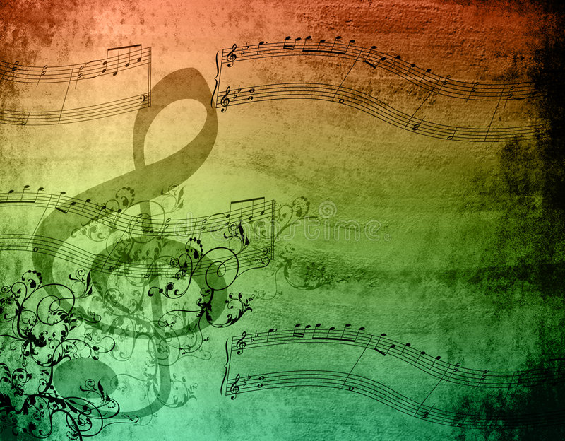
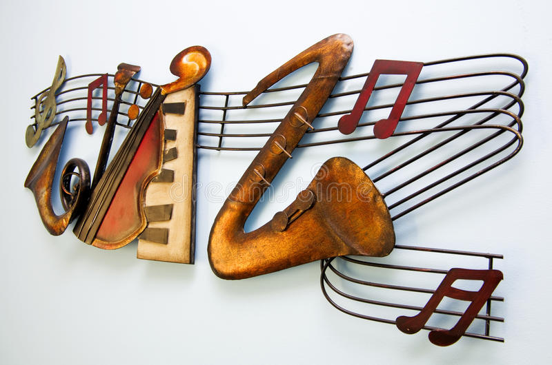

mujer medicina
Podemos hablar de una generación de mujeres medicina, mujeres que se sanan a sí mismas, que
reconocen y escuchan su cuerpo. Mujer medicina es aquella que va rompiendo con los estereotipos
de
belleza, aquella que acompaña y apoya a otras mujeres, sembrando en cada una la semilla de la
sororidad.
Musica medicina
define la musicoterapia como una psicoterapia que utiliza el sonido, la música y los
instrumentos
corpóreo-sonoro-musicales, para establecer una relación entre musicoterapeuta y paciente o
grupos de
pacientes, permitiendo a través de ella mejorar la calidad de vida, y recuperar y rehabilitar al
paciente para
donde nacio la musica medicina
Desde la antigüedad, en China la música ha sido un recurso importante en el mantenimiento y
cuidado
de la salud. Ya en el famoso canon del Emperador Amarillo -tratado clásico y fundamental de la
medicina tradicional china- aparecen las primeras vinculaciones.

Para que sirve la musica medicina
Gracias a su capacidad para activar casi todas las regiones del cerebro, la medicina se vale de
la
música para tratar los síntomas de algunos trastornos mentales y lesiones cerebrales. Estas
terapias
ayudan a favorecer la neuroplasticidad y a compensar las deficiencias en las regiones dañadas
del
cerebro.

la musico-terapia
La musicoterapia consiste en usar las respuestas y conexiones de una persona con la música para
estimular cambios positivos en el estado de ánimo y el bienestar general. La terapia musical
puede
incluir crear música con instrumentos de todo tipo, cantar, moverse con la música o simplemente
escucharla.